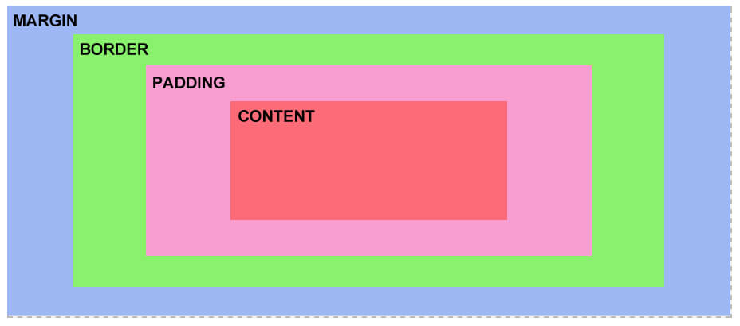

What is CSS Box Model?
The CSS box model is essentially a box that wraps around every HTML element. It consists of: margins, borders, padding, and the actual content. The image below illustrates the box model: 
What is box-sizing?
By default in the CSS box model, the width and height you assign to an element is applied only to the element's content box. If the element has any border or padding, this is then added to the width and height to arrive at the size of the box that's rendered on the screen. This means that when you set width and height, you have to adjust the value you give to allow for any border or padding that may be added. For example, if you have four boxes with width: 25%;, if any has left or right padding or a left or right border, they will not by default fit on one line within the constraints of the parent container.
The box-sizing property can be used to adjust this behavior:
- content-box gives you the default CSS box-sizing behavior. If you set an element's width to 100 pixels, then the element's content box will be 100 pixels wide, and the width of any border or padding will be added to the final rendered width, making the element wider than 100px.
- border-box tells the browser to account for any border and padding in the values you specify for an element's width and height. If you set an element's width to 100 pixels, that 100 pixels will include any border or padding you added, and the content box will shrink to absorb that extra width. This typically makes it much easier to size elements. box-sizing: border-box is the default styling that browsers use for the elements whose type is radio, checkbox, reset, button, submit, color, or search.